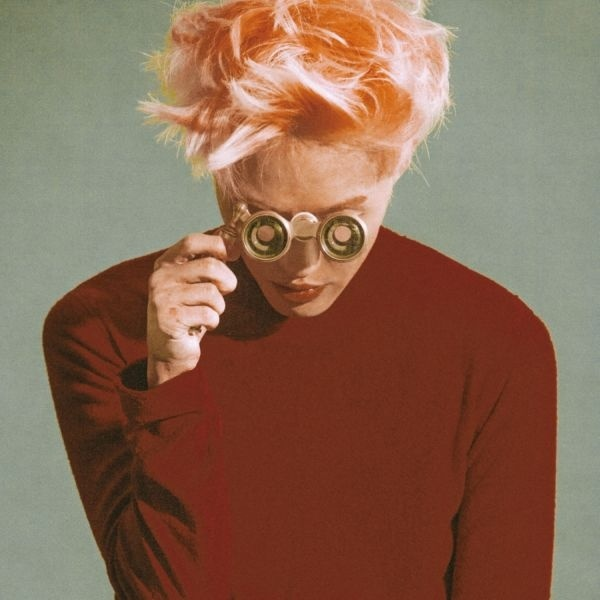

Zion.T

- Zion.T
자이언티
- 예명
- 본명
김해솔
- 출생
1989년 4월 13일 (32세)
서울특별시 휘장 서울특별시 동작구 흑석동
- 신체
176cm, 54kg, O형
음반
2011.04.29 Click Me
2013.03.06 뻔한 멜로디
2013.04.09 Red Light
2013.12.19 미러볼
2014.09.22 양화대교
2015.02.02 Young Zion.T & Crush 콜라보
2015.05.19 Eat
2015.10.12 No Make Up
2016.06.29 쿵&Machine Gun
2017.02.01 OO
2017.12.04 눈
2018.10.15 ZZZ
2019.11.06 5월의 밤
2020.02.12 더럽게 (SUMIN+Zion.T)
2020.04.18 I Just Want to Stay With You (더 킹 : 영원의 군주 OST Part.1)
2020.07.07 confirmed (Zion.T & ESENS 콜라보)
2020.08.18 질투 (카니발 광고음악)
2021.05.03 크림빵 (SUMIN+Zion.T)